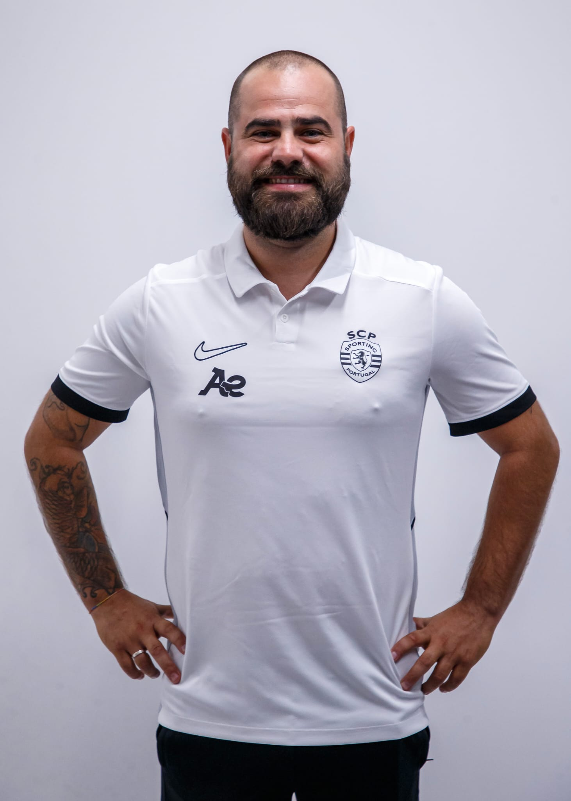

Treino
Planeamento e condução de sessões, organização do jogo e desenvolvimento individual e coletivo.
Treinador de Futebol Nível 2 · Scouting · Análise de Jogo
Transformar observação em conhecimento. Conhecimento em decisões. Decisões em evolução.

Experiência no terreno, capacidade de observação e pensamento estratégico ao serviço do desenvolvimento individual e coletivo.
Profissional de futebol com experiência nas áreas do treino, scouting e análise de jogo, em contextos de formação e futebol feminino, incluindo colaboração com estruturas nacionais e internacionais.
O meu percurso combina intervenção direta no processo de treino com identificação e avaliação de talento, análise do adversário e interpretação dos comportamentos individuais e coletivos.
Procuro contribuir para ambientes de trabalho exigentes e colaborativos, onde a observação, o detalhe e a aprendizagem contínua sustentam a evolução dos atletas e das equipas.
Quatro dimensões complementares para compreender, preparar e desenvolver o jogo.
Planeamento e condução de sessões, organização do jogo e desenvolvimento individual e coletivo.
Observação, avaliação de atletas, elaboração de relatórios e acompanhamento de mercados.
Análise da própria equipa e do adversário, identificação de padrões e apresentação de feedback.
Leitura do jogo, definição de prioridades e articulação entre análise e processo de treino.
Exemplos das áreas de trabalho e da estrutura de análise aplicada ao treino, à competição e à identificação de talento.
Leitura estruturada dos comportamentos coletivos e individuais, nos diferentes momentos do jogo.
Observação: identificar comportamentos recorrentes e respetivos contextos. Interpretação: compreender causas, relações e consequências. Intervenção: transformar conclusões em prioridades de treino e recomendações à equipa técnica.
Processo de observação e avaliação do atleta, considerando função, contexto competitivo e potencial de desenvolvimento.
Identificação: posição, pé dominante, idade e contexto. Avaliação: comportamentos observáveis com e sem bola. Conclusão: adequação à ideia de jogo, potencial, riscos e recomendação fundamentada.
Observação da sessão para avaliar a ligação entre objetivos, exercícios, comportamentos pretendidos e transferência para o jogo.
Antes: objetivo, organização e critérios. Durante: tempo útil, intensidade, participação e intervenções. Depois: evidências de aprendizagem, ajustamentos e continuidade do processo.
Planeamento, preparação e organização das bolas paradas ofensivas, com foco na criação de rotinas, exploração dos espaços e identificação de soluções para finalizar.
Recursos práticos para estruturar a observação, registar evidências e fundamentar decisões de avaliação individual.
Ferramenta interativa para observar e interpretar os comportamentos coletivos nos diferentes momentos do jogo, durante ou após a partida.
Documento prático complementar ao eBook, para construir o modelo ofensivo, analisar o adversário, desenhar rotinas, planear o treino e avaliar resultados.
Ficha interativa para observação de jogadores, preenchível diretamente no navegador e preparada para impressão ou exportação em PDF.
Ferramenta para diagnosticar necessidades, definir objetivos individuais, planear estratégias de treino e acompanhar a evolução da atleta.
Relatórios e trabalhos de análise que demonstram a observação dos comportamentos coletivos, a identificação de padrões e a interpretação dos diferentes momentos do jogo.
AF Aveiro · Campeonato SABSEG 2023/2024 · Jornada 22 · 25 fevereiro 2024.
15.ª jornada do Campeonato de Portugal · 07 janeiro 2018 · Coruchense 2017/2018.
10.ª jornada do Campeonato de Portugal · 12 novembro 2017 · Coruchense 2017/2018.
Relatório de observação · Estrutura 4–3–3 · Análise técnico-tática.
Um percurso construído em diferentes contextos competitivos, funções técnicas e realidades do futebol.
Treinador Adjunto · Sub-15 Feminino · Responsável pela preparação e organização das bolas paradas ofensivas.
Treinador Adjunto · Sub-16 Feminino
Treinador Adjunto · Escalões Sub-10 a Sub-13.
Treinador Adjunto · Sub-17 Feminino · Nacional 2.ª Divisão Sub-19. Responsável pela preparação e organização das bolas paradas ofensivas.
Head Scout / Coordenador · Coordenação de scouting do projeto feminino.
Scout Internacional Feminino · Mercados europeus e americanos.
Scout Principal em Portugal · 2.ª Liga Feminina Espanhola.
Treinador Principal · Iniciados e Infantis.
Observador Técnico (Scout) de Formação · Loures e Lisboa.
Analista de Equipa Sénior · Apoio técnico e análise tática.
Treinador de Formação · Iniciados e Escolas.
Coruchense · 2016/2017
Subida ao Campeonato de Portugal.
SL Cartaxo · 2015/2016
Equipa Sénior.
Coruchense · 2017/2018
Analista e apoio técnico.
Formação técnica, análise, scouting, preparação física e competências de liderança.
Disponível para novos desafios, projetos e oportunidades de colaboração.